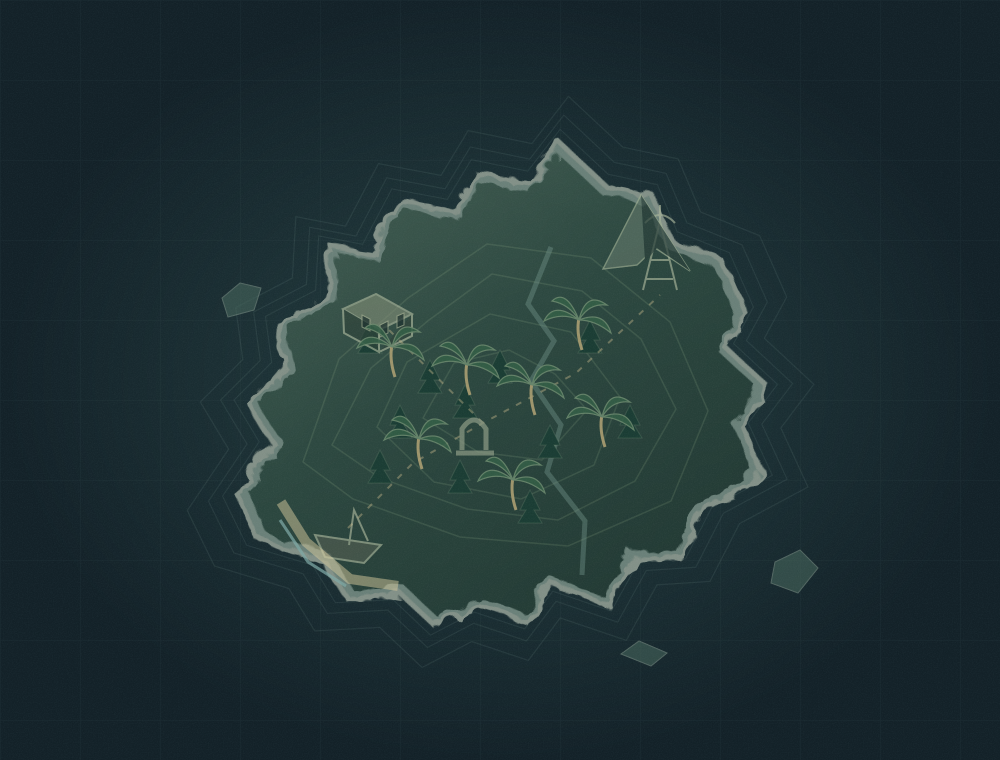

이 섬은 지도에 없었다
ISLAND
MYSTERY
사라진 섬의 비밀
특별 도전 기록은 기본 게임과 구분됩니다.
여섯 명의 생존자. 사라진 기억.
파도 너머에서, 낯선 무전 신호가 들려온다.
누구를 믿을 것인가. 무엇을 발견할 것인가.
당신의 첫 번째 기록은 여기에서 시작된다.
화면 준비 중…
저장된 기록을 확인하는 중입니다.
미확인 군도좌표 불명 / 수신 불안정
함께 남겨진 사람들
온라인 멀티플레이
서버 연결 대기
서버 재시작 시 온라인 방은 사라집니다. 싱글플레이 저장은 그대로 유지됩니다.
숨겨진 장소 4곳
이번 게임의 이야기 단서
사건 타임라인
모닥불 대화
자유 채팅은 사람에게 전달됩니다. AI는 아래 선택형 발언·공개 증거를 판단합니다.
대사 재생은 기록 보기입니다. 게임 진행과 발언 선택은 아래 행동 버튼을 사용하세요.

해도 001 / 위치 미상N
╋├────────┤
축척 불명 탐사 가능 지역
목적지를 선택해 탐사 계획을 세우세요.지도에 표시된 경로는 추정입니다.
나의 기억과 증거
직접 목격과 전달된 정보를 구분합니다. 의심 수치는 나의 판단이며 정체를 뜻하지 않습니다.
기억 펼치기
이번 행동의 결과
공개 기록 + 나의 비밀 기록
함께 깨어난 사람들
다른 사람의 직업은 비공개입니다. 추방·사망 후에는 관전으로 게임을 마칠 수 있습니다.
수색 기록